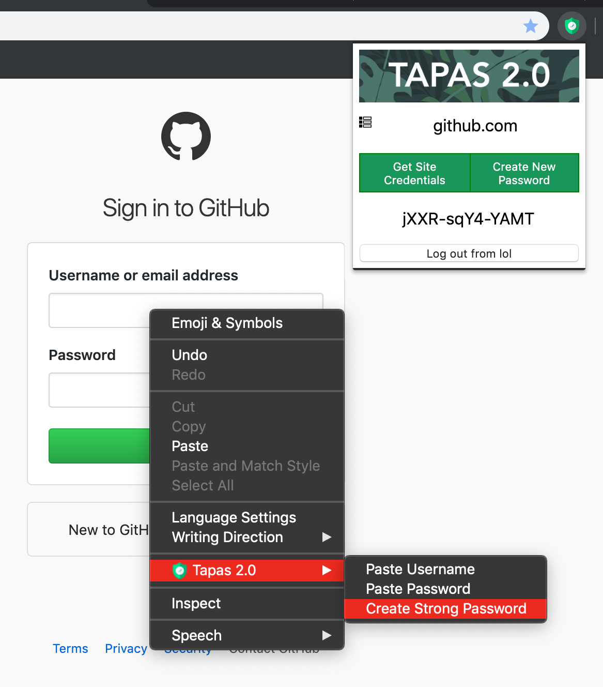

For our CSC490 capstone project course, the theme for this year was Information Security. Ahmed, Darshan, and I decided to build a dual-possession authentication password manager based off of Tapas. Because we create so many accounts nowadays for various websites, password managers have become a security must. One should avoid repeating passwords on multiple websites and the passwords themselves should be strong - not easy for us to memorize. Thus, building a secure password manager felt like an interesting challenge to work on.

Tapas Chrome Extension view with Context Menu options.
The idea is simple: separate the encryption / decryption logic from the passwords. The Chrome Extension (on laptop) holds onto the encryption / decryption logic while the phone holds the encrypted passwords. If one device is stolen, the passwords are unrecoverable. With recovery, device management, thoughtful research and implementation of security throughout, we received a 96% in the course. View our Keynote Presentation (YouTube) and our Final Report (PDF) for more details.